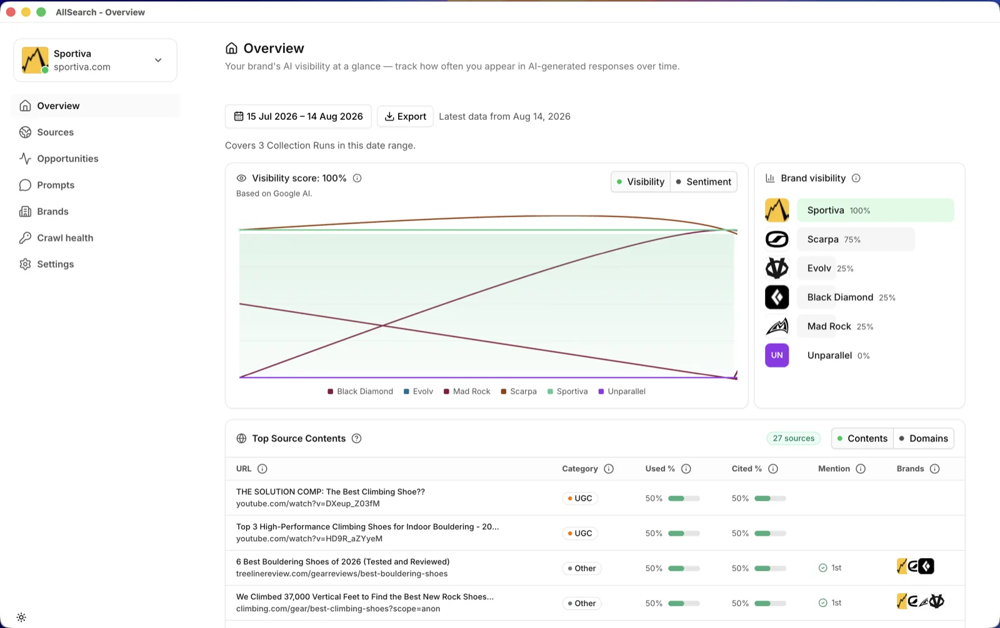
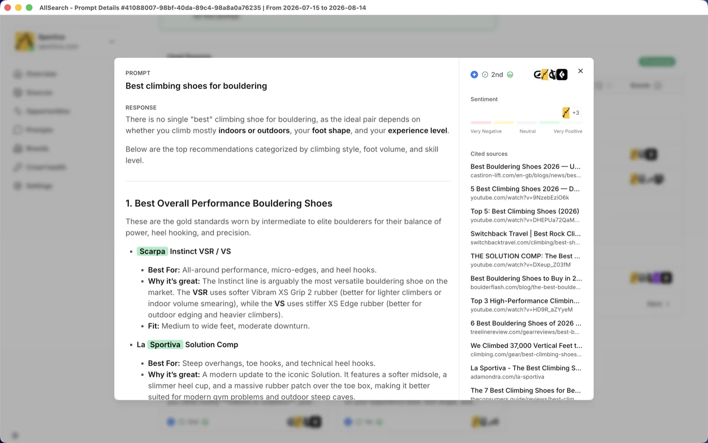

AllSearch tracks how often a Brand is mentioned and cited by AI chatbots, then turns the gaps into content recommendations. It runs entirely on your own machine, against your own AI provider keys — no account, no server, no data leaving your computer.


npx allsearch
New to this? Install Node.js first — it includes npx.
Starts a local server and opens your browser. A Google AI key is enough to get going — OpenAI and Perplexity keys are optional and add those chatbots to your tracking. Your data stays in a SQLite file on your machine.
A native Mac app is also available from the releases page (Apple Silicon only). It's unsigned, so on first launch right-click the app and choose Open instead of double-clicking.